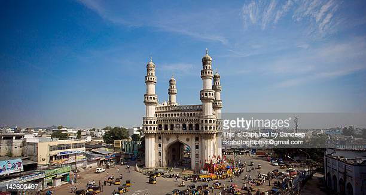
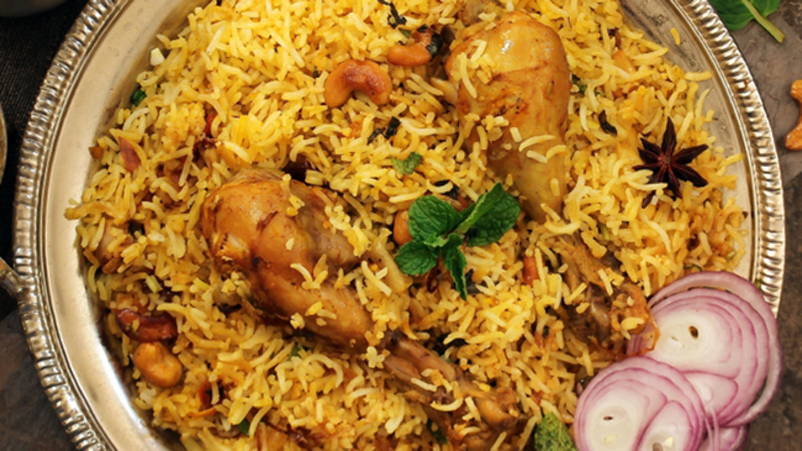
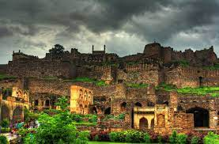
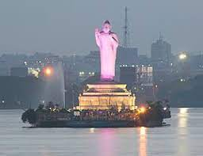

Hyderabad THE CITY OF LIGHTS

Hyderabad is the capital and largest city of the Indian state of Telangana and the de jure capital of Andhra Pradesh.[A] It occupies 650 km2 (250 sq mi) on the Deccan Plateau along the banks of the Musi River, in the northern part of Southern India. With an average altitude of 542 m (1,778 ft), much of Hyderabad is situated on hilly terrain around artificial lakes, including the Hussain Sagar lake, predating the city's founding, in the north of the city centre. According to the 2011 Census of India, Hyderabad is the fourth-most populous city in India with a population of 6.9 million residents within the city limits, and has a population of 9.7 million residents in the metropolitan region, making it the sixth-most populous metropolitan area in India. With an output of US$74 billion, Hyderabad has the fifth-largest urban economy in India.
Muhammad Quli Qutb Shah established Hyderabad in 1591 to extend the capital beyond the fortified Golconda.
In 1687, the city was annexed by the Mughals. In 1724, Mughal Viceroy Nizam Asaf Jah I declared his sovereignty and founded the Asaf Jahi dynasty, also known as the Nizams.
Hyderabad served as the imperial capital of the Asaf Jahis from 1769 to 1948. As capital of the princely state of Hyderabad, the city housed the British Residency and cantonment until Indian independence in 1947.

Biryani is a mixed rice dish originating among the royal khansamas of the durbar of Old Delhi, under the Mughal Empire, during the late 16th century of the then Mughal Court.[1] It is made with Indian spices, rice, and usually some type of meat (chicken, beef, goat, lamb, prawn, fish) or in some cases without any meat, and sometimes, in addition, eggs and potatoes.
Biryani is a mixed rice dish originating among the royal khansamas of the durbar of Old Delhi, under the Mughal Empire, during the late 16th century of the then Mughal Court.[1] It is made with Indian spices, rice, and usually some type of meat (chicken, beef, goat, lamb, prawn, fish) or in some cases without any meat, and sometimes, in addition, eggs and potatoes.

Biryani is a mixed rice dish originating among the royal khansamas of the durbar of Old Delhi, under the Mughal Empire, during the late 16th century of the then Mughal Court.[1] It is made with Indian spices, rice, and usually some type of meat (chicken, beef, goat, lamb, prawn, fish) or in some cases without any meat, and sometimes, in addition, eggs and potatoes.

Biryani is a mixed rice dish originating among the royal khansamas of the durbar of Old Delhi, under the Mughal Empire, during the late 16th century of the then Mughal Court.[1] It is made with Indian spices, rice, and usually some type of meat (chicken, beef, goat, lamb, prawn, fish) or in some cases without any meat, and sometimes, in addition, eggs and potatoes.